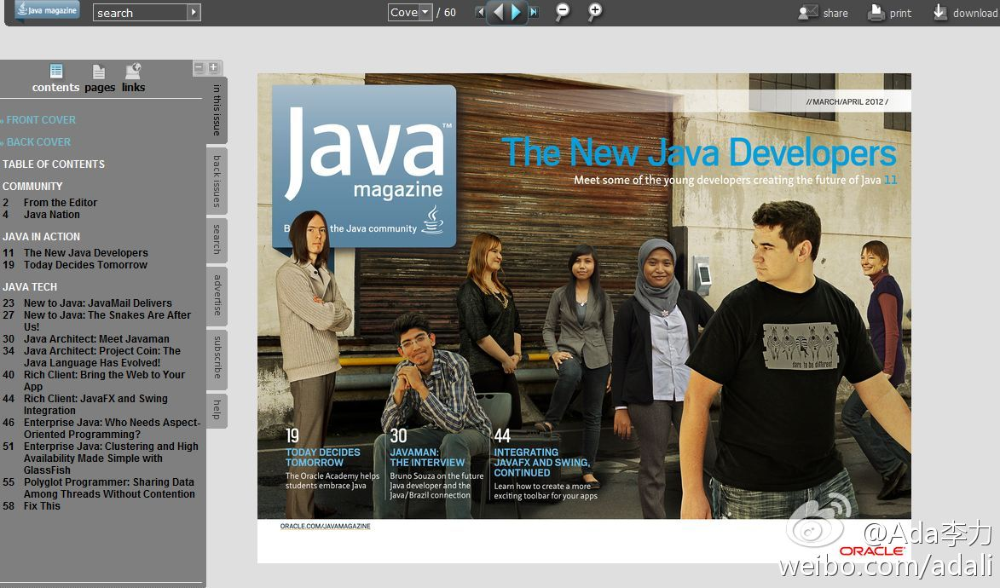

真是Max的作品 ? 怪不得图角上的名字牌眼熟。那这神龛有年头了。//@Giulianoo朱亮:你的神龛暴露了 @BrokenWindows //@Ada李力: 肯定是个Java程序员。//@李喆_Grace: @Ada李力 //@SkyGqWu: 转发微博---:抱歉，作者已设置仅展示半年内微博，此微博已不可见。
每月一期的#Java Magazine#电子杂志又来了, 每期杂志60页, 免费, 可以下载. 这期杂志里介绍了全球搜罗来的7位年轻Java开发者, JavaFX, Java Architect, Enterprise Java 等内容 - Front Cover 网页链接 
 肯定是个Java程序员。//@李喆_Grace: @Ada李力 //@SkyGqWu: 转发微博
肯定是个Java程序员。//@李喆_Grace: @Ada李力 //@SkyGqWu: 转发微博